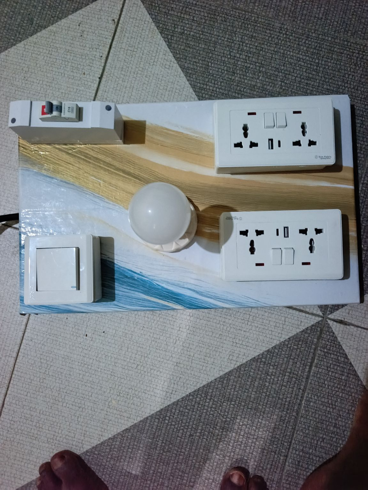

Project photograph supplied by the project developer.
01 · Project Overview
This project is a single-phase domestic electrical installation demonstration board designed for a nominal 230 V AC supply. It demonstrates basic residential wiring concepts through a lighting point controlled by a one-way switch and two double socket outlets connected in parallel.
The project was developed to build practical understanding of domestic electrical components, circuit arrangement, basic protection and installation practices.
02 · Project Specifications
03 · Project Objectives
- Demonstrate a single-phase domestic electrical installation.
- Understand the function of an MCB in overcurrent protection.
- Demonstrate the connection and operation of double socket outlets.
- Demonstrate lighting control using a one-way switch.
- Develop practical skills in electrical wiring and installation.
- Understand the application of electrical components in residential buildings.
04 · Components and Materials
| Component | Quantity / status | Purpose |
|---|---|---|
| Miniature Circuit Breaker (MCB) | 1 | Provides overcurrent protection against overloads and short circuits. |
| Double socket outlets | 2 | Provide connection points for electrical appliances. |
| One-way switch | 1 | Controls the lighting point. |
| Light bulb and lamp holder | 1 each | Provide the lighting load and its connection. |
| Earth conductor | Used | Protective conductor intended to provide a path for fault current. |
| Neutral conductor | Used | Provides the normal return path for load current. |
| Insulated copper cables | Used | Connect the electrical components. |
| Mounting board | 1 | Supports the installed components. |
05 · Circuit Arrangement and Working Principle
The project developer reports that the single MCB supplies both the lighting and socket-outlet branches. The two double socket outlets are connected in parallel, and the one-way switch controls only the bulb.
Socket-outlet branch
In a parallel arrangement, each socket outlet is connected across the supply so that each receives the nominal supply voltage and can operate independently of the other, within the circuit's design limits.
Lighting branch
The one-way switch controls the bulb. In a correctly wired installation, the switch interrupts the live conductor to the lighting point. Closing the switch completes the lighting circuit; opening it turns the bulb off.
Protective conductors
The installation is reported to include earth and neutral conductors. Their correct termination, continuity and polarity must be verified by testing; their presence alone does not prove the installation is safe.
This is a descriptive overview, not a verified wiring schematic. A detailed circuit diagram should be drawn only after the actual terminations have been inspected.
06 · Safety Features and Verification
- One MCB is installed for overcurrent protection.
- An earth conductor is reported as present.
- Insulated copper connecting cables are used.
- No RCD/RCCB/ELCB is installed, according to the project developer.
07 · Testing Status
Functional status: The project developer reports that all components operate as intended.
Instrumented safety tests: Results have not yet been supplied for this portfolio. No test results are claimed here.
08 · Learning Outcomes
The project provides practical exposure to identifying domestic electrical components, understanding a basic single-phase arrangement, controlling a lighting point, connecting socket outlets in parallel, and appreciating the role of protective devices and verification testing.
09 · Project Information
Project title: Single-Phase Domestic Electrical Installation
Project developer: David Adjei
Project category: Electrical Engineering · Domestic Installation
Supply specification: 230 V single-phase AC